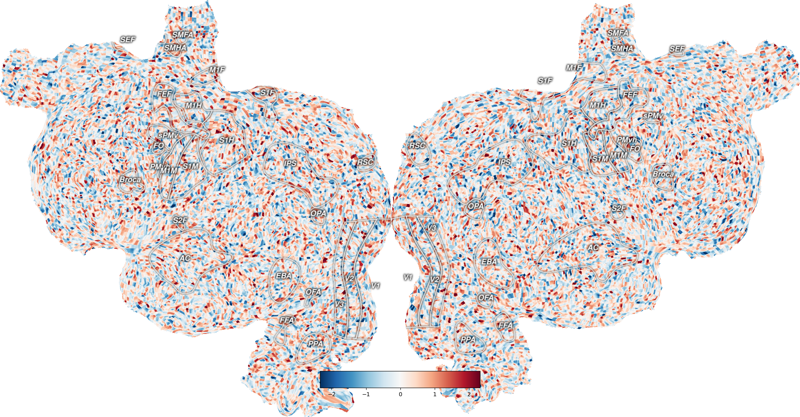
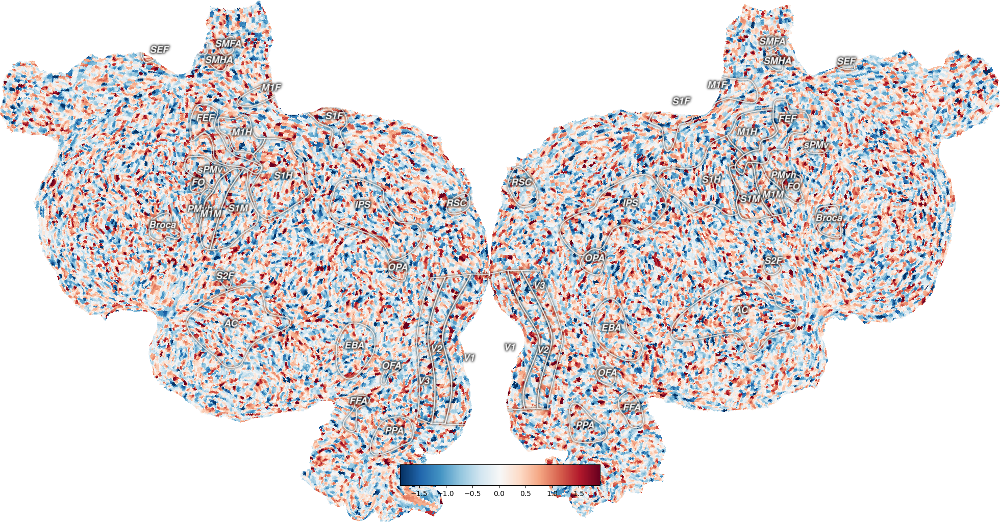

Note
Click here to download the full example code
Map from Volume to Vertex Data¶
In order to move from Volume data to Vertex data, you start with data from voxels and then create a cortex.Volume object. Then, you get a mapper to go between voxels and vertices for the specific subject and transform you are working with. Pass the voxel volume through the mapper and you get out a vertex mapping of that data. You can plot both of these as you normally would.
- 
- 
import cortex
import cortex.polyutils
import numpy as np
np.random.seed(1234)
import matplotlib.pyplot as plt
subject = 'S1'
xfm = 'fullhead'
# First create example voxel data for this subject and transform
voxel_data = np.random.randn(31, 100, 100)
voxel_vol = cortex.Volume(voxel_data, subject, xfm)
# Then we have to get a mapper from voxels to vertices for this transform
mapper = cortex.get_mapper(subject, xfm, 'line_nearest', recache=True)
# Just pass the voxel data through the mapper to get vertex data
vertex_map = mapper(voxel_vol)
# You can plot both as you would normally plot Volume and Vertex data
cortex.quickshow(voxel_vol)
plt.show()
cortex.quickshow(vertex_map)
plt.show()
Total running time of the script: ( 0 minutes 6.284 seconds)